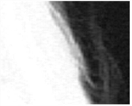
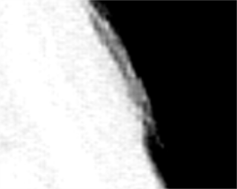

剪辑级别使用两个参数进行调整- 剪辑 黑色 和 剪辑 白色 。任何等于或低于的 alpha 值 剪辑 黑色 设置为零，任何 alpha 值为或高于 剪辑 白色 设置为 1。左边的图显示图像的原始 alpha，右边的图显示剪辑图像的结果。
|
 |
 |
| 剪辑黑色 = 0。 | 剪辑黑色 = 0.5。 |
请注意黑色背景中的灰色区域是如何减少的，灰色边缘已经大大变硬。合成时, 剪辑 黑色 如果前景的部分显示通过，则可以使用控件来改善背景图像。的 剪辑 白色 另一方面，控制可以用来固定哑光的中心，使其对背景不太透明。
注意: 如果你选择使用 剪辑 黑色 和 剪辑 白色 ,你需要非常小心，不要破坏你前景的边缘。它可以使用 剪辑 回滚 来弥补这一点。
|
|